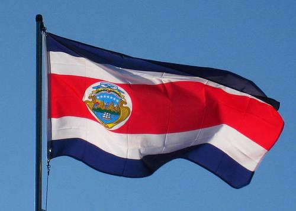

Estaciones
Costa Rica solo tiene 2 estaciones al año verano e invierono.
Biodiversidad
EL 6% DE LA DIVERSIDAD DEL MUNDO SE ENCUENTRA EN COSTA RICA.

Bandera
Su bandera contiene los colores azul, blanco y rojo.